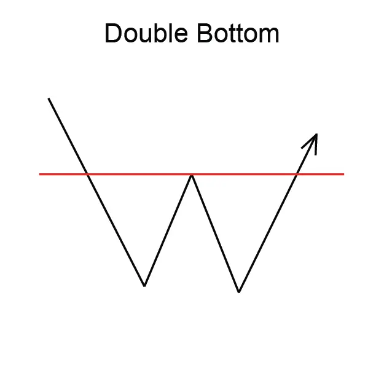
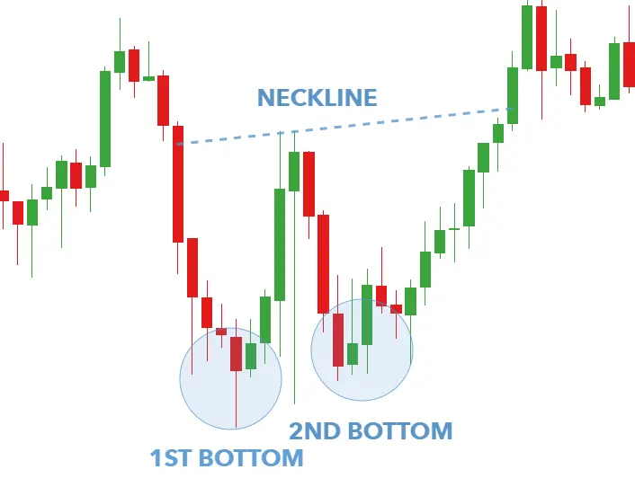

Implicaciones
Un doble fondo se considera una señal de aumento, lo que indica una posible reversión de la tendencia baja actual a una nueva tendencia ascendente.
Descripción
Los Bottoms dobles se consideran entre los patrones más comunes. Dado que parecen ser tan fáciles de identificar, el doble fondo debe ser abordado con precaución por el inversor. El doble fondo es un patrón de reversión de una tendencia hacia abajo en el precio de una acción. El Doble Bajo marca una tendencia descendente en el proceso de convertirse en una tendencia ascendente.
Un doble fondo ocurre cuando los precios forman dos bajos distintos en un gráfico. Un doble fondo sólo es completo, sin embargo, cuando los precios suben por encima del extremo alto del punto que formó el segundo bajo. Las dos bajas serán distintas. El patrón es completo cuando los precios suben por encima del máximo de la formación. El punto más alto se llama "punto de confirmación".

Figura 6: Doble fondo
Los analistas varían en sus definiciones específicas de un Bajo Doble. Según algunos, después de que se forme el primer fondo, debe seguirse un rally de al menos el 10%. Ese aumento se mide de alto a bajo. Esto debe ser seguido por un segundo fondo. El segundo fondo regresando al mínimo anterior (más o menos 3%) debe estar en un volumen más bajo que el primero. Otros analistas sostienen que el aumento registrado entre los dos niveles inferiores debe ser de al menos el 20% y que los niveles bajos deben estar separados por lo menos un mes.
A veces los dos bajos que comprenden un Doble Bajo no están exactamente en el mismo nivel de precio. Esto no hace que el patrón sea inválido. Los analistas aconsejan que si el segundo bajo varía en precio del primer bajo en más del 3% o 4%, el patrón puede ser menos fiable.
TLos fondos tendrán una cantidad significativa de tiempo entre ellos - que van desde unas pocas semanas a un año dependiendo de si un inversionista está viendo un gráfico semanal o un diario.
En general, el volumen en un Bajo Doble suele ser mayor en la parte inferior izquierda que en la derecha. El volumen tiende a ser hacia abajo a medida que se forman los patrones. El volumen, sin embargo, se eleva a medida que el patrón alcanza sus bajas. El volumen aumenta de nuevo cuando el patrón se completa, rompiendo el punto de confirmación.
Características importantes
Las siguientes son características importantes a buscar en un Bajo Doble.
Tendencia hacia abajo Anterior Doble Bajo
El Doble Bajo es una formación inversa. Comienza con los precios en tendencia descendente.
Tiempo entre Bottoms
Los analistas prestan especial atención al "tamaño" del patrón - la duración del intervalo entre los dos bajos. En general, cuanto más largo sea el tiempo entre los dos bajos, más importante es el patrón como una buena reversión. Algunos analistas sugieren que los inversores deberían buscar patrones en los que al menos un mes transcurra entre los bajos. No es raro que pasen unos meses entre las fechas de los dos fondos.
Aumento desde el primer mínimo
Algunos analistas argumentan que el aumento del precio que ocurre entre los dos fondos debería ser consecuencia, que asciende a aproximadamente el 20% del precio. Otros analistas no son tan definidos o exigentes con respecto al aumento de precios. Para algunos, un aumento de al menos un 10% es suficiente. El aumento entre los bajos tiende a parecer redondeado, pero también puede ser irregular en forma.
Volumen
El volumen tiende a ser más pesado durante la primera baja y más ligero en la segunda. Es común ver el volumen subir de nuevo en el momento de la breakout.
Retiro después de la breakout
Un retroceso después de la breakout es habitual para un Double Bottom.
Consideraciones de negociación
Duración del patrón
Considere la duración del patrón y su relación con sus horizontes de tiempo de negociación. La duración del patrón se considera como un indicador de la duración de la influencia de este patrón. Cuanto más tiempo dure el patrón, más tiempo tardará en que el precio se mueva a su precio objetivo. Cuanto más corto sea el patrón, más rápido será el movimiento del precio. Si está considerando una oportunidad de comercio a corto plazo, busque un patrón con una duración corta. Si está considerando una oportunidad de comercio a largo plazo, busque un patrón con una duración más larga.
Precio objetivo
El precio objetivo proporciona una importante indicación sobre el movimiento potencial de los precios que este patrón indica. Considere si el precio objetivo para este patrón es suficiente para proporcionar rendimientos adecuados después de que sus costos (como comisiones) se hayan tenido en cuenta. Una buena regla es que el precio objetivo debe indicar un retorno potencial de más del 5% antes de que un patrón se considere útil. Sin embargo, debe tener en cuenta el precio actual y el volumen de acciones que tiene la intención de negociar. También, compruebe que el precio objetivo ya no se ha alcanzado.
Inbound
Tendencia La tendencia de entrada es una característica importante del patrón. Una tendencia de entrada superficial puede indicar un período de consolidación antes de que comience el movimiento de los precios indicado por el patrón. Busque una tendencia de entrada que sea más larga que la duración del patrón. Una buena regla es que la tendencia de entrada debe ser al menos dos veces la duración del patrón.
Criterios que respaldan
Apoyo y resistencia
Busque una región de apoyo o resistencia alrededor del precio objetivo. Una región de consolidación de precios o una fuerte línea de apoyo y resistencia en o alrededor del precio objetivo es un indicador fuerte de que el precio se moverá a ese punto.
Ubicación del desplazamiento
Media El fondo doble debe estar por debajo de una media móvil de longitud adecuada. Para patrones de corta duración, utilice una media móvil de 50 días, para patrones más largos utilice un promedio móvil de 200 días.
Dirección de movimiento
Tendencia promedio La media móvil debe cambiar de dirección dentro de la duración del patrón y debe dirigirse en la dirección indicada por el patrón. Para patrones de corta duración, utilice una media móvil de 50 días, para patrones más largos utilice un promedio móvil de 200 días.
Volumen
Un fuerte pico de volumen el día de la confirmación del patrón es un indicador fuerte en apoyo del potencial para este patrón. El pico de volumen debe estar significativamente por encima de la media del volumen durante la duración del patrón. Además, el volumen durante la duración del patrón debería estar disminuyendo en promedio.
Otros patrones
Otros patrones de reversión (como las líneas de engulfamiento de Bullish y Bearish y las islas) que ocurren en las cumbres y los valles indican una fuerte resistencia en esos puntos. La presencia de estos patrones dentro de un Bajo Doble es una fuerte indicación en apoyo de este patrón.
Criterios que refuten
Sin aumento de volumen en la confirmación
La falta de un pico de volumen el día de la confirmación del patrón es una indicación de que este patrón puede no ser fiable. Además, si el volumen ha permanecido constante, o estaba aumentando, durante la duración del patrón, entonces este patrón debe considerarse menos fiable.
Ubicación de la media móvil
Si el doble fondo está por encima de la media móvil entonces este patrón debe considerarse menos fiable. Compara la ubicación del patrón con una media móvil de longitud adecuada. Para patrones de corta duración, utilice una media móvil de 50 días, para patrones más largos utilice un promedio móvil de 200 días.
Tendencia de media móvil
Mira la dirección de la tendencia de la media móvil. Para patrones de corta duración, utilice una media móvil de 50 días, para patrones más largos utilice un promedio móvil de 200 días. Una media móvil que está en tendencia en la dirección opuesta a la indicada por el patrón es una indicación de que este patrón no es fiable.
Tendencia de entrada corta
Una tendencia de entrada que es significativamente más corta que la duración del patrón es una indicación de que este patrón debe considerarse menos confiable.
Comportamiento subyacente
Un doble fondo consiste en dos bajos bien definidos a aproximadamente el mismo nivel de precio. Esta forma se forma porque los precios caen a un nivel de soporte, se reúnen y se retiran, luego caen al nivel de apoyo de nuevo antes de aumentar y finalmente romper la línea de resistencia.
